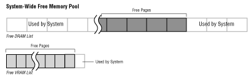
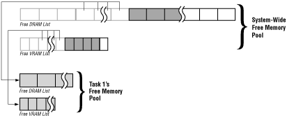
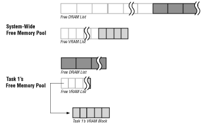
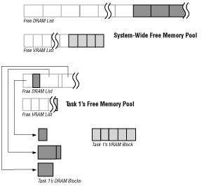
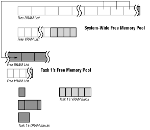
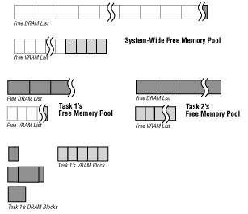
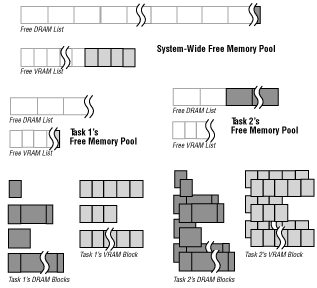
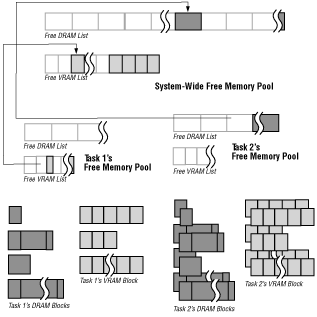

Current systems include 1 MB of VRAM, which can be expanded to 2 MB. Future systems may have larger memory capacities.
In systems with 2 MB of VRAM, VRAM is divided into two 1 MB banks. The SPORT bus can only transfer data between locations in the same bank, never between banks. When blocks of VRAM are allocated, each block must come from the same bank.
Note: Future 3DO systems may have other kinds of special purpose memory, including memory for direct memory access (DMA), for the cel engine, for audio, and for the digital signal processor (DSP). See Allocating Memory for information about when to specify these future memory types in current software.
Unlike other types of memory, access to NVRAM is through the Portfolio file system, where it is treated as a separate volume. For more information about NVRAM, see The Filesystem and the File Folio.
Each page of memory has an owner. Although any task can read any memory location in RAM, only the task that owns a page (or a task that the owner designates) can write to the page. How tasks become owners of memory is explained in How Memory Allocation Works. How tasks can transfer ownership of memory to other tasks is explained in the section Transferring Memory to Other Tasks.
When a task needs memory, it allocates a block of memory from the memory pages it owns. It specifies the size of the block in a call to a memory allocation function. The bytes in a memory block are always contiguous, even when the block crosses page boundaries.
For the remainder of this chapter, unless otherwise indicated, the term "pages" refers to the memory protection pages, and not to the SPORT hardware pages.
Most tasks let the kernel take care of memory allocation and free memory lists. However, tasks that need additional control over memory allocation can create their own memory lists and allocate memory to themselves from those lists.
Free Memory Pools
The kernel keeps a list of free memory lists for each owner of memory. For example, it creates a list containing two free memory lists, one for DRAM and one for VRAM, for each new task that is created. This list of memory lists-which contains all the unused memory that a task owns -is the task's free memory pool. When a task allocates memory, it must allocate it from its own free memory pool.
Note: Threads share the free memory lists with their parent and sibling threads. Access to these lists is controlled by a semaphore.
In addition to the free memory pools for tasks, there is a system-wide free memory pool that contains the unused memory that the kernel owns. The next section explains how memory is transferred from the system-wide free memory pool to the free memory pools for specific tasks.
How Memory Allocation Works
The following sections take you step-by-step through the process of memory allocation and illustrates what happens to memory pools, lists, and blocks at each step.

Figure 1: System-wide free memory pool on bootup.
Figure 1 illustrates that the system software allocates a number of pages for itself (currently 19 pages of DRAM and 1 page of VRAM for a system with 2 MB DRAM and 1 MB VRAM). On current 3DO systems with 2 MB of DRAM and 1 MB of VRAM, this leaves at least 1440 KB of DRAM and 1008 KB of VRAM for applications. In certain cases, the operating system can free additional memory for applications.
Note: A task's VRAM pool is usually empty when the task first starts up.

Figure 2: A task receives necessary memory for its own free memory pool.
When memory moves from one free memory pool to another, only full pages of memory are moved. All the memory in a page belongs to the same owner, so a page is the smallest amount of memory that can be transferred from one owner to another.

Figure 3: A task allocates a block of VRAM for its frame buffer.

Figure 4: A task allocates blocks of DRAM.

Figure 5: A task frees a block of memory.
Figure 6: The kernel transfers pages of DRAM to satisfy a memory request.

Figure 7: A second task receives its own free memory pool.

Figure 8: The system wide free memory pool runs low on memory.
ScavengeMem() on the tasks behalf, as shown Figure 9.
ScavengeMem()returns any completely unused pages of memory in a task's free memory pool to the system-wide free memory pool, thereby making the pages available to other tasks.

Figure 9: Tasks scavenge memory in response to the kernel's signal.
Table 1: Corresponding memory allocation and memory freeing calls. -------------------------------------------------- Allocate Function |Corresponding Free Function -------------------------------------------------- AllocMem() |FreeMem() -------------------------------------------------- malloc() |free() -------------------------------------------------- AllocMemList() |FreeMemList() -------------------------------------------------- AllocMemFromMemList() |FreeMemToMemList() -------------------------------------------------- AllocMemFromMemLists()|FreeMemToMemLists() -------------------------------------------------- AllocMemBlocks() |ControlMem() --------------------------------------------------
memdebug to identify problems with your memory usage. See Debugging Memory Usage for more information.